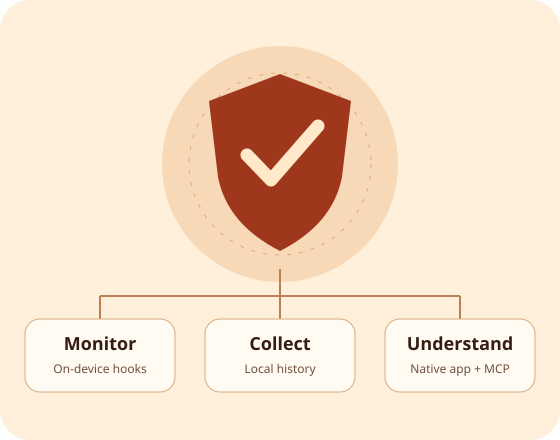

The monitoring engine
Hooks supported APIs in enabled app processes. Eight categories cover network, files, keychain, clipboard, location, camera, microphone, and tracking-related calls.
New project · November 2026 · Jailbreak beta
An iPhone app that turns supported app activity into a readable timeline. Built on the phone it observes, with local history and an optional AI connection.

Why I built it
I wanted to see what happened after opening an app: which supported network, clipboard, location, file, and other sensitive actions it called. The first version was a local dashboard. I then built a native UIKit app so checking activity felt like using an iPhone app.
The result is a small system with three parts: a monitoring tweak, a collector, and a viewer. It is being distributed as a beta through Sileo and Zebra.
Hooks supported APIs in enabled app processes. Eight categories cover network, files, keychain, clipboard, location, camera, microphone, and tracking-related calls.
A Python collector receives events, batches them into SQLite, and serves the local app. Seven-day retention keeps the timeline focused.
Browse apps and recent events, search the loaded list, or connect a compatible Claude/Codex client to read-only MCP tools for summaries and domain observations.
Optional MCP connection
“Which apps contacted these domains?”
“What clipboard actions were recorded?”
The connector exposes bounded metadata queries. It omits clipboard contents, raw file paths, full URLs, and credential details. It does not send reports automatically.
When you connect an AI client, the returned metadata enters that conversation. Domain contact or a high event count alone is not evidence of malicious behavior.
Read the connector setup →Try the beta
Add the repository in Sileo or Zebra, then install Privacy Monitor. Its dependencies include the engine, collector, and Python runtime.
https://satyamsaxena1.github.io/repo/
For Dopamine rootless. Engine tested on iPhone 13 Pro Max / iOS 15.5; clean-device installation and native UI verification remain beta work. Other configurations are unverified. Only supported actions are visible; this is not a complete audit or a malware detector.